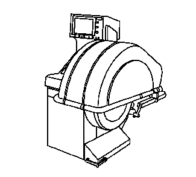
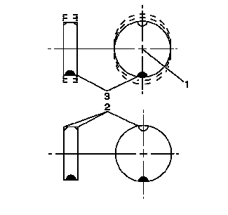
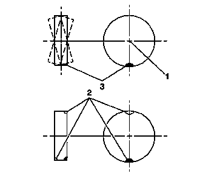
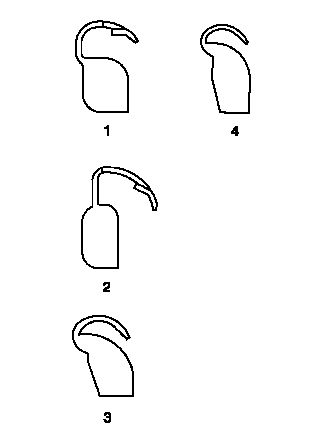
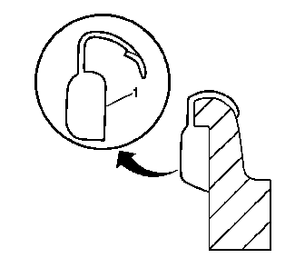
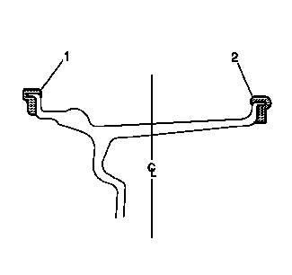
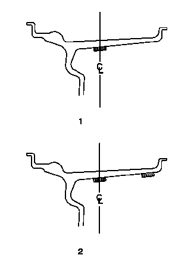

轮胎和车轮总成平衡－车下
警告：
轮胎平衡前未遵循以下注意事项，可能导致人身伤害或部件损坏：
清除车轮内侧的污物或积垢。
清除胎面上的任何石子。
戴好护眼罩。
在铝质车轮上使用涂覆配重。
轮胎和车轮总成平衡机校准
轮胎和车轮平衡机长时间使用后会漂移校准状态，也可能因经常使用而变得不准确。而校准问题很可能没有任何可察觉的迹象。如果平衡机未按规范进行校准，则在该平衡机上进行平衡的轮胎和车轮总成实际上可能并未获得平衡。
如果轮胎和车轮总成平衡机经常使用，和/或平衡机读数有疑问，则应大约每2周对平衡机的校准状态进行一次检查。
轮胎和车轮总成平衡机校准测试
注意:
如果平衡机在校准测试的任何一个步骤中出现问题，则应该根据制造商的使用说明来校准平衡机。如果平衡机无法校准，请与制造商联系以获取帮助。
根据制造商的建议检查轮胎和车轮总成平衡机的校准，或执行以下测试。

1.
在轴上没有车轮或任何适配器的状态下，转动平衡机。
2.
检查平衡机读数。
规格
0到7克（¼ 盎司）
3.
如果平衡机符合规范，则用该平衡机将符合径向和横向跳动公差的轮胎和车轮总成平衡到零跳动为止。
4.
在轮胎和车轮总成平衡后，在车轮的任一位置上加上85克（3盎司）的测试配重块。
5.
再次旋转轮胎和车轮总成。记下读数。
•
在静平衡和动平衡模式下，平衡机应要求在与测试配重块相对180度位置上再加上85克（3盎司）的配重块。
•
在动平衡模式下，还应在与测试配重块相对的车轮凸缘上增加配重块。
6.
在总成不平衡达85克（3盎司）情况下，转动平衡机5次。
7.
检查平衡机读数：
规格
最大变化 - 7克（¼ 盎司）
8.
在平衡机轴上重新定位轮胎和车轮总成，从其原来位置旋转90度。
9.
总成置于新的位置后，旋转平衡机。
10.
检查平衡机读数：
规格
最大变化 - 7克（¼ 盎司）
11.
重复步骤8至10，直到轮胎和车轮总成在平衡机轴的4个位置上依次进行了旋转和检查。
轮胎和车轮总成平衡指南
注意:
即使轮胎和车轮总成进行了平衡，但跳动量过大的轮胎和车轮总成仍会产生振动。
强烈建议在轮胎和车轮总成平衡之前，对轮胎和车轮总成的跳动量进行测量，并视情况予以校正。
如果未测量轮胎和车轮总成的跳动量，请在继续操作前参见
轮胎和车轮总成跳动量的测量－车下
。
轮胎和车轮平衡有2种：
静态平衡

静平衡指重量沿车轮圆周均匀分布。将车轮配重块（2） 放置在车轮上，以抵消较重部位（3） 的影响。静失衡的车轮可能会产生弹跳动作，称为“跳振”。
动态平衡

动平衡指在轮胎和车轮总成中心线的两侧均匀分布重量。将车轮配重块（2） 放置在车轮上，以抵消较重部位（3） 的影响。动失衡的车轮具有从一侧向另一侧移动的趋势，会导致“摆振”。
大多数车下平衡机能够同时检查这两种平衡。
总的来讲，大多数车辆对静失衡要比动失衡更为敏感，但是，对于配备了低断面、宽胎面花纹、高性能轮胎和车轮的车辆，即使动失衡较小，也很容易受到影响。在某些车型中，即使是小到14-21克（½-¾盎司）的失衡量也会引起振动。
平衡程序
告诫：
参见
有关车辆提升和举升位置的告诫
。
注意:
在平衡轮胎和车轮总成时，请使用已知良好、刚经过校准的车下双平面动平衡机，并将其设定为最精细平衡模式。
1.
举升并顶起车辆。
2.
标记车轮相对车轮双头螺栓的位置，并且在每个轮胎和车轮上标记具体车辆位置 - 左前、左后、右前和右后。
3.
逐个拆下轮胎和车轮总成，并将其安装在旋转式车轮平衡机上。参见
轮胎和车轮的拆卸和安装
。
4.
严格遵守车轮平衡机制造商提供的说明，采用正确的安装方法来安装不同类型的车轮。
将售后加装车轮（特别是采用通用凸耳的车轮）假定为导致跳动和安装问题的潜在原因。
5.
确保采用正确种类的车轮配重块，以适合被平衡车轮的轮辋类型。确保在铝制车轮上使用正确的带涂层的车轮配重块。参见“车轮配重块的使用方法”。
6.
尽可能将所有四个轮胎和车轮总成平衡到接近于零为止。
7.
利用拆卸前所作的装配标记，将轮胎和车轮总成安装到车辆上。参见
轮胎和车轮的拆卸和安装
。
8.
降低车辆。
车轮配重块的使用方法
轮胎和车轮总成可使用静平衡或动平衡法进行平衡。
夹装式配重块

注意:
在使用夹装式配重块来平衡原厂铝制车轮时，必须使用专用的聚酯涂层配重块。这些涂层配重块降低了腐蚀或损坏铝制车轮的可能性。
这些涂层配重块降低了腐蚀或损坏铝制车轮的可能性。
•
MC（1）和AW（2）系列配重块允许在铝制车轮上使用。
•
P（3）系列配重块只允许在钢制车轮上使用。
•
T（4）系列涂层配重块在钢制和铝制车轮上都可使用。

注意:
在安装聚酯涂层夹装式车轮配重块时，请使用尼龙或塑料锤，以最大程度地降低损坏聚酯涂层的可能性。
轮辋凸缘的轮廓和类型决定了应该采用哪种类型的夹装式车轮配重块（1）。配重块应贴紧轮辋凸缘的轮廓。配重块卡子应牢固卡在轮辋凸缘上。
车轮配重块的放置 - 夹装式配重块

进行静平衡时，如果仅要求28克（1盎司）或以下的配重块，则将其放置在内侧凸缘（2）上。如果静平衡需要28克（1盎司）以上的配重块，则尽可能将配重块均匀分配在内侧凸缘（2）和外侧凸缘（1）之间。
进行动平衡时，将车轮配重块安装在车轮平衡机指定的位置的内侧轮辋凸缘（2）和外侧轮辋凸缘（1）上。
粘接式配重块

注意:
在无凸缘的车轮上安装粘接式配重块时，切勿将配重块安装在轮辋的外侧表面上。
粘接式配重块可用在原厂铝制车轮上。按以下程序安装粘接式车轮配重块。
1.
确定车轮配重块放置在车轮上的正确放置位置。
•
进行静平衡时，如果要求仅28克（1盎司）或以下的配重块，则在车轮内侧表面上沿车轮中心线（1）放置车轮配重块。如果要求28克（1盎司）以上的配重块，则尽可能在车轮中心线和车轮内表面（2）的内侧边缘之间均匀分配配重块。
•
进行动平衡时，按车轮平衡机指定的位置，沿车轮中心线和车轮内表面（2）的内侧边缘放置配重块。
2.
确保车轮配重块与制动系统部件之间留有足够的间隙。
注意:
切勿使用研磨剂来清理车轮表面。
3.
用沾有通用清洁剂的干净的抹布或纸巾，彻底清除配重块指定安装部位上的任何腐蚀物、过量喷涂物、污物或其他任何异物。
4.
为确保没有任何残余物，用干净的抹布或纸巾沾取按1:1混合的异丙醇和水混合液，再次擦拭配重块的安装部位。
5.
用热风干燥安装部位，直到车轮表面摸上去温热。
6.
将车轮配重块的背胶预热至室温。
7.
将配重块背面的背胶衬纸撕下。切勿触摸背胶胶面。
8.
将配重块贴到车轮上，并用手按压到位。
9.
用辊子施加90牛（21磅）的力，将配重块固定到车轮上。